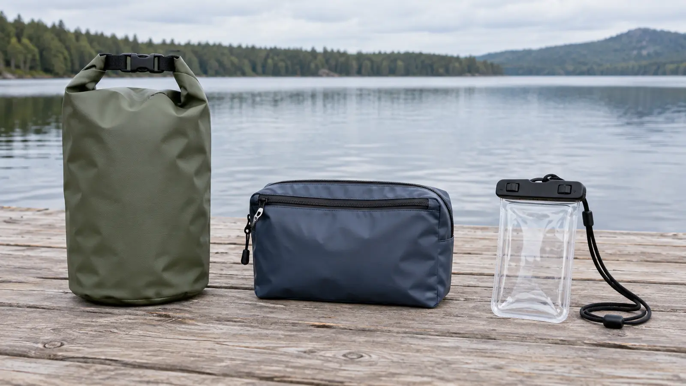

Family Dry Bags: Roll-Top vs Zippered vs Phone Pouch—and the Dry-Run Rule
A dry bag is a closure system with limits, not a force field. Buy for the exact water exposure, close it exactly as instructed and prove the packed system with something that can afford to get wet.

Representative unbranded storage categories beside calm water. Original AI-assisted editorial photograph; no model, waterproof rating, flotation or submersion claim is implied.
The blunt version: roll-top bags are useful for bulky dry layers and lunch, zippered pouches trade simple construction for faster access, and phone pouches solve one small job. None of them replaces a life jacket, responsible supervision or the exact instructions printed by the maker.
Start with the failure you are buying against
“Waterproof” is not a complete use case. Rain on a picnic blanket, spray in a canoe, a bag sitting in a wet boat, a child dropping a pouch at the shoreline and full submersion are different exposures. Write down the real one before comparing liters, colors or marketing photos. Then read the exact product claim and care instructions. If the maker does not describe the exposure you expect, the bag has not promised to handle it.
The International Electrotechnical Commission's IP system classifies tested protection against solids and water for products that actually carry a verified IP code. A vague phrase such as “water resistant,” “waterproof material” or “all-weather” is not automatically an IP rating and says nothing by itself about a finished bag's seams, zipper, closure or wear. Do not invent equivalence between a fabric claim and a complete-product test.
Choose the closure before the capacity
These categories overlap, but they fail differently. Buy the failure mode you can see and manage.
Roll-top dry bag
Best fit: dry layers, towels, lunch or shared gear that can stay closed for a whole leg of the day.
Tradeoff: the closure needs the maker's full number of clean, aligned rolls and usable empty space above the contents. Frequent access defeats the system.
Zippered gear pouch
Best fit: small items that need faster, flatter access and a maker-defined level of water protection.
Tradeoff: sand, grit, folds and incomplete zipper travel can compromise the seal. A water-resistant organizer is not a submersible case.
Phone pouch
Best fit: one compatible phone or compact item when the exact dimensions, latch and use claim match.
Tradeoff: touch controls, camera quality, face recognition, heat, lanyard strength and seal cleanliness can all matter. It is not a child tether or flotation device.
The rule: if the maker's claim, closure directions and your expected exposure do not line up, choose a different bag or move the item to a truly protected location.
Roll-top: simple only when packed correctly
A roll-top bag creates its closure by folding the top over itself and securing the buckle or clips. It needs a flat, clean top with enough unfilled material to complete the maker's required rolls. Overstuffing steals that closure space. A towel caught in the fold, sand on the coating or a side buckle used as a carry handle contrary to instructions can create the failure.
Choose a roll-top for gear you can group by job: one family layer bag, one lunch bag or one bag for dry clothes. Do not buy one giant sack because its price per liter looks efficient. The item needed first will be at the bottom, and a heavy shared bag becomes difficult to lift, close and attach. Two modest bags can be easier to inspect and assign than one enormous one.
Check whether the product is designed only for rain and splash, or whether the maker makes a stronger short-duration or submersion claim. Do not add your own. Many roll-top bags are intentionally not airtight, and trapped air or an accidental float does not make them flotation equipment.
Zippered pouch: fast access, higher maintenance
A zipper is attractive because adults and older children understand it quickly. The important question is what kind of zipper and finished construction the product actually uses. A standard coated zipper on a gear organizer may resist spray while still allowing water through the ends or seams. A purpose-built sealing zipper may require full closure, lubrication, inspection or more pulling force. Read the instructions before assigning it to a child.
Use zippered storage for sunscreen, a field notebook, keys without sharp edges or other items that need controlled access. Keep grit away from the track and never force a zipper over an overfilled pouch. If the pouch carries medicine or a critical key, use a second protective layer and keep it adult-controlled. One closure should not be the only barrier between a family and a serious consequence.
Phone pouch: compatibility is more than screen size
Measure the phone with its actual case. Confirm the pouch's stated internal dimensions, closure method, depth claim and lanyard instructions. Test the camera, emergency calling and the controls the family expects to use. A phone that technically fits but cannot make a call through the material is not ready for the job.
Never put the phone in a new pouch for its first water test. Use dry paper and a sacrificial towel first. Do not swing the pouch by the lanyard, tie it to a child in moving water or assume the lanyard is a safety device. Heat can also build inside clear material in direct sun; follow the phone and pouch makers' temperature guidance.
The dry-run protocol
Inspect dry: look for cuts, peeling coatings, split seam tape, grit, distorted closures, missing parts and a zipper that does not travel fully.
Pack a safe test: use dry paper around a small towel. Do not use a phone, medicine, car key or document.
Close exactly: follow the manufacturer's roll count, zipper direction, latch sequence and air-removal instructions. Do not improvise.
Match the test to the claim: spray or shallow exposure only when the maker allows it. Never create a deeper or longer submersion test than the product is designed to withstand.
Dry the exterior first: remove grit and water before opening so the test does not drip inward.
Read the result: damp paper is a failure. Reinspect the closure and instructions; replace or downgrade the bag's job rather than blaming the paper.
Repeat the check after storage, heavy use, visible abrasion or a closure problem. A successful test proves only that one bag, packed that way, handled that exposure on that day. It is not a permanent certification.
Capacity and packing without the fantasy math
List the exact load and pack it before buying a set. Bulky fleece consumes volume without much weight; a phone pouch needs almost none; wet towels should live on the wet side, not contaminate the dry side. Leave closure space. A nominal ten-liter bag does not offer ten liters of usable stuffed-to-the-rim capacity when several clean rolls are required.
Use color or labels to assign jobs, but do not rely on color alone in low light. Put the most critical dry item in the smallest independent layer. Keep sharp objects, leaking sunscreen and open food away from the phone pouch. The family daypack guide explains why access order matters as much as total capacity.
Water safety still comes first
A dry bag does not make a child water-ready. The U.S. Coast Guard says life jackets must be appropriate for the activity, properly fitted and worn. Follow the exact state and federal rules for the water, boat and wearer. Keep the family beach boundary and active adult supervision primary. Never clip a heavy bag to a child's body or use a dry bag as a seat, tow float, rescue device or substitute for approved flotation.
On a boat or paddle craft, secure gear only at attachment points and by methods the craft maker permits. Do not create an entanglement loop, block a drain, interfere with reentry or attach weight where it changes stability. When in doubt, ask the boat manufacturer, outfitter or qualified guide—not a bag listing.
What not to buy
A bag chosen only because the fabric is called waterproof while the seams and closure have no clear finished-product claim.
An oversized shared bag that no child and only one adult can move when loaded.
A phone pouch whose internal dimensions ignore the real case, camera bump or closure clearance.
A sealing zipper that the intended user cannot close fully and inspect.
A product with no identifiable manufacturer, instructions, material care or claim boundary.
A transparent pouch sold as universal protection for medicine, passports and electronics at once.
Any bag marketed or used as flotation without the exact required approval for that safety purpose.
The no-buy option
For a picnic, short hike or light-rain museum transfer, use a zip-top inner bag inside the sound backpack already owned, then keep it away from standing water. For a boat, beach or repeated wet use, that improvised layer is only a splash-and-organization tactic—not a submersion claim. The right no-buy answer is often moving electronics to the car and carrying fewer things.
Weather, cleanup and kid-meltdown backups
Rain increases: stop opening the bag and move to shelter or the planned exit. Bag leaks: move the critical item to the independent backup layer and downgrade the bag. Sand in the closure: keep it open until cleaned by the maker's method; do not grind the seal shut. Child keeps opening it: assign a separate snack pouch and keep the dry bag adult-controlled. Wet exit: use the travel-bag ownership system so wet gear does not disappear into the clean-clothing bag.
Who should skip it
Skip specialized dry bags when the day never leaves the car, covered picnic shelter or indoor attraction. Skip a phone pouch for a child who will treat the lanyard as a toy. Skip a sealing zipper the family cannot maintain. Families carrying temperature-sensitive medicine or irreplaceable documents should follow the item owner's storage requirements and use redundant protection, not a generic bag guide.